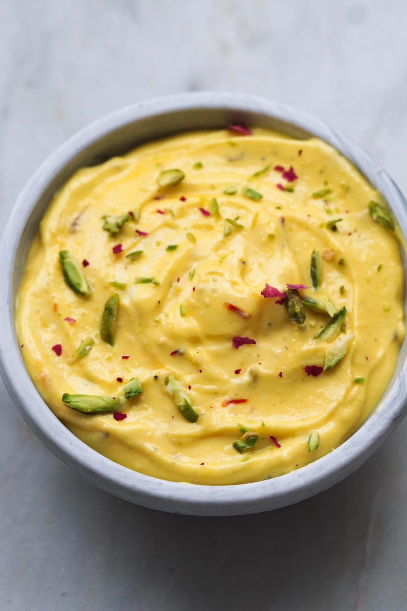
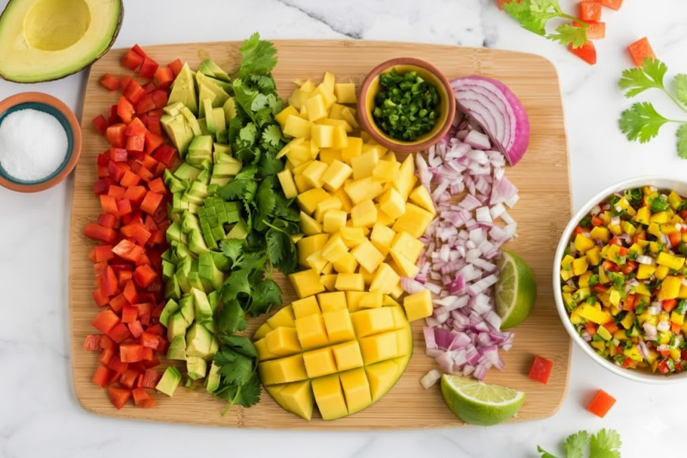
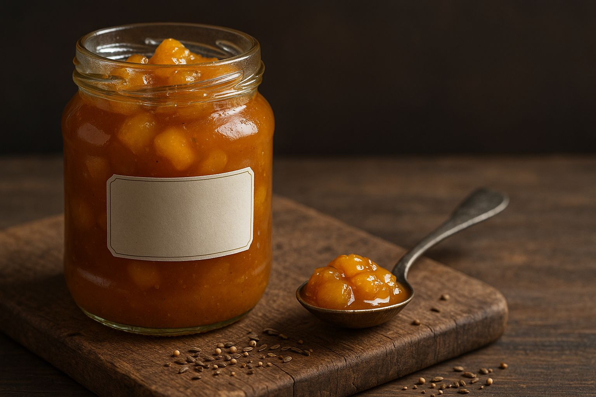
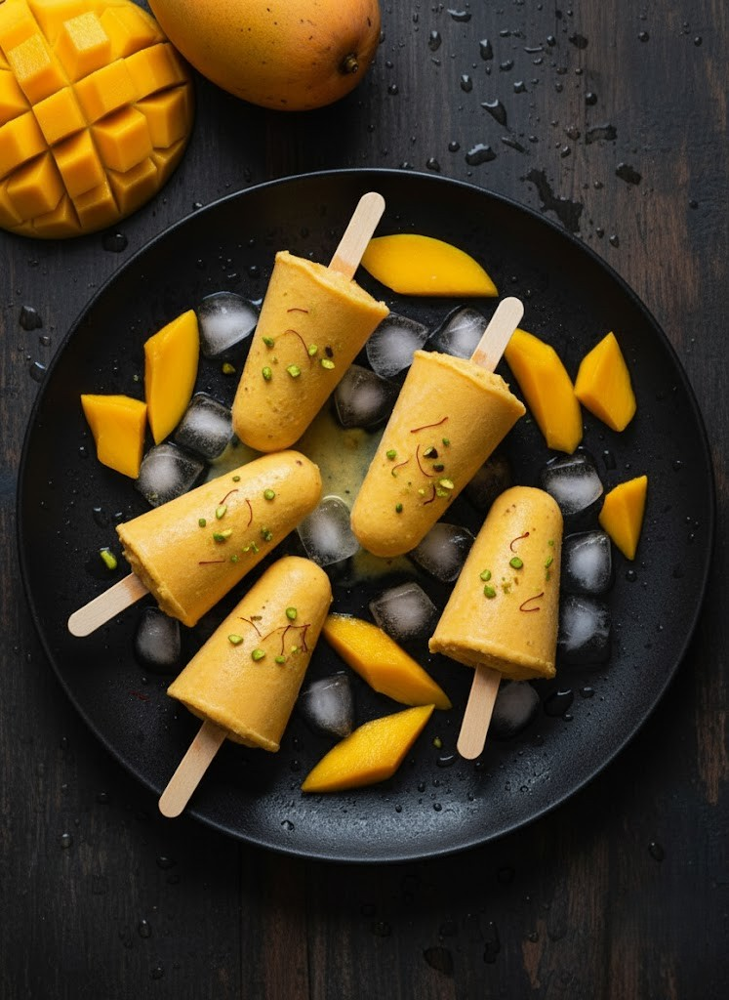
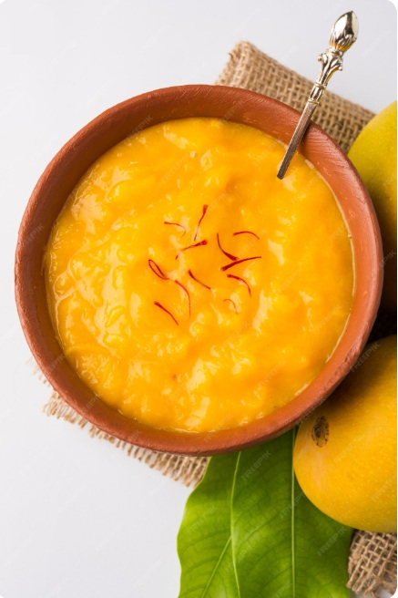

Classic Mango Lassi (Cafe-Style)
Ingredients
- Ripe mango flesh - 2 cups (~300 g, 2 large mangoes)
- Full-fat plain yogurt - 1 cup (240 g)
- Cold milk or water - 1/2 cup (120 ml)
- Sugar or honey - 1-2 tbsp (to taste)
- Ground cardamom - 1/8 tsp
- Ice - 1 cup (~8 cubes), optional
- Saffron strands and chopped pistachios - optional garnish
Instructions
- Blend mango, yogurt, milk or water, sugar, and cardamom until silky.
- Add ice for a thicker, colder lassi and blend again.
- Pour into chilled glasses and garnish if desired.
Best with: Alphonso or Kesar for intense aroma
Storage: Refrigerate up to 24 hours (shake before serving)
~230 kcal7g protein43g carbs5g fat38g sugar

Mango Shrikhand (Amrakhand Dessert)
Ingredients
- Thick curd / yogurt - 2 cups, fresh and thick
- Mango pulp - 1 cup
- Powdered sugar - 1/4 cup
- Saffron milk - 2 tbsp
- Cardamom powder - 1/4 tsp
- Almonds, chopped - 1 tbsp
- Pistachios, chopped - 1 tbsp
- Fresh mango pieces - a few, for garnish
Instructions
- Take thick and creamy curd, also known as hung curd or chakka, in a mixing bowl.
- Whisk until smooth and creamy.
- Add mango pulp, powdered sugar, and cardamom powder.
- Add saffron milk by soaking a few saffron strands in 2 tbsp warm milk.
- Mix well until the sugar dissolves into the curd.
- Add chopped almonds and pistachios, then mix gently.
- Transfer to a serving bowl and garnish with fresh mango pieces.
- Serve immediately or chill in the refrigerator before serving.
Best with: Alphonso or Kesar for rich mango flavor and color
~210 kcal7g protein25g carbs9g fat

Fresh Mango Salsa (No-Cook)
Ingredients
- Ripe mango - 2 cups (300 g), 1/4-inch dice
- Red bell pepper - 1 cup (150 g), 1/4-inch dice
- Red onion - 1/4 cup (40 g), minced
- Jalapeno - 1, seeded and minced
- Fresh cilantro - 1/4 cup (10 g), chopped
- Lime juice - 3 tbsp (45 ml)
- Salt - 1/2 tsp � Ground cumin - 1/4 tsp (optional)
Instructions
- Toss all ingredients and rest 5 minutes.
- Adjust salt and lime. Serve with chips, tacos, grilled fish, or paneer.
Best with: Kent, Keitt, or Ataulfo - firm ripe texture
~45 kcal1g protein11g carbs0g fat
No-Bake Mango Cheesecake
Crust Ingredients
- Digestive biscuits or grahams - 200 g (~14 sheets)
- Unsalted butter, melted - 6 tbsp (85 g)
- Sugar - 1 tbsp (optional) � Pinch of salt
Filling Ingredients
- Cream cheese (room temp) - 16 oz (450 g)
- Greek yogurt - 3/4 cup (180 g)
- Powdered sugar - 3/4 cup (90 g) � Vanilla - 1 tsp
- Mango puree - 1 1/2 cups (360 g), strained
- Gelatin - 2 1/2 tsp or Agar-agar - 2 tsp + 1/4 cup hot water
Instructions
- Pulse biscuits fine, mix with butter, and press into a 9-inch springform tin. Chill.
- Bloom gelatin or agar in hot water and cool briefly.
- Beat cream cheese, yogurt, sugar, and vanilla smooth. Mix in mango puree and stream in gelatin.
- Pour into crust and chill 4-6 hours.
- Spread a quick mango topping over the set cake if desired and chill again.
Best with: Alphonso or Kesar for vibrant color
~360 kcal6g protein34g carbs22g fat

Quick Sweet & Spicy Mango Chutney
Ingredients
- Ripe mango - 4 cups (600 g), 1/2-inch dice
- Sugar - 1/2 cup (100 g) or jaggery for deeper flavor
- Apple cider vinegar - 1/2 cup (120 ml)
- Onion - 1/2 cup � Ginger - 1 tbsp minced � Garlic - 2 cloves
- Raisins - 1/4 cup � Red chili flakes - 1/2-1 tsp
- Salt - 3/4 tsp � Cumin - 1/2 tsp � Mustard seeds - 1/2 tsp � Oil - 1 tbsp
Instructions
- Warm oil, bloom mustard seeds, and saute onion, ginger, and garlic.
- Add mango, sugar, vinegar, raisins, chili, salt, and cumin.
- Simmer until jammy. Cool, jar, and refrigerate.
Best with: Slightly underripe mangoes - holds shape better
~60 kcal / 2 tbsp14g carbs12g sugar

Creamy Mango Kulfi (No Ice Cream Maker)
Ingredients
- Condensed milk - 1 can (14 oz / 396 g)
- Evaporated milk - 1 can (12 oz / 354 ml)
- Heavy cream - 1 cup (240 ml)
- Mango puree - 1 1/2 cups (360 g)
- Cardamom - 1/4 tsp � Saffron - 10 strands in 1 tbsp warm milk (optional)
- Chopped pistachios - 2 tbsp (optional)
Instructions
- Whisk condensed milk, evaporated milk, and cream.
- Stir in mango puree, cardamom, saffron milk, and pistachios.
- Pour into kulfi molds and freeze 6-8 hours.
- Dip molds in warm water briefly to unmold.
Best with: Alphonso, Kesar, or Ataulfo for sweetness and color
~260 kcal5g protein27g carbs15g fat

10-Minute Aamras (Maharashtrian/Gujarati)
Ingredients
- Ripe mango flesh - 3 cups (450 g)
- Warm milk or water - 1/4-1/2 cup (60-120 ml), as needed
- Sugar or jaggery - 1-2 tbsp (optional)
- Cardamom - 1/8 tsp � Saffron - 6-8 strands (optional)
- Pinch of salt
Instructions
- Blend mango with liquid, sugar, cardamom, saffron, and salt until thick and pourable.
- Chill for best flavor. Serve with puri, chapati, or as dessert.
Best with: Alphonso or Kesar - classic Aamras taste
~160 kcal2g protein38g carbs1g fat33g sugar

Thai-Style Mango Sticky Rice
Ingredients
- Glutinous (sweet) rice - 1 1/2 cups (300 g), soaked 30-60 min
- Coconut milk (full-fat) - 1 can (13.5 oz / 400 ml)
- Sugar - 1/3 cup + 2 tbsp (95 g total)
- Salt - 1/2 tsp
- Ripe mango - 3 large (~900 g flesh), sliced
- Toasted sesame seeds or mung beans - 1 tbsp (optional)
Instructions
- Steam soaked sticky rice 20-25 min until tender.
- Warm coconut milk with sugar and salt until just dissolved.
- Transfer hot rice to bowl; fold in most of the coconut mixture. Rest 15 min.
- Simmer the remaining coconut mixture briefly for sauce.
- Plate rice, top with mango, and spoon sauce over.
Best with: Alphonso, Kesar, or Ataulfo/Honey
~380 kcal5g protein63g carbs12g fat
Note: Recipe ideas, ingredient amounts, and preparation notes on this page are shared for general inspiration only. Please adjust quantities, cooking times, and methods to suit your ingredients, preferences, and dietary needs.
Ready to cook? Get Fresh Mangoes today.
Order online - pickup in Short Pump or Chesterfield, VA. Pay at pickup.
Place Your Order →